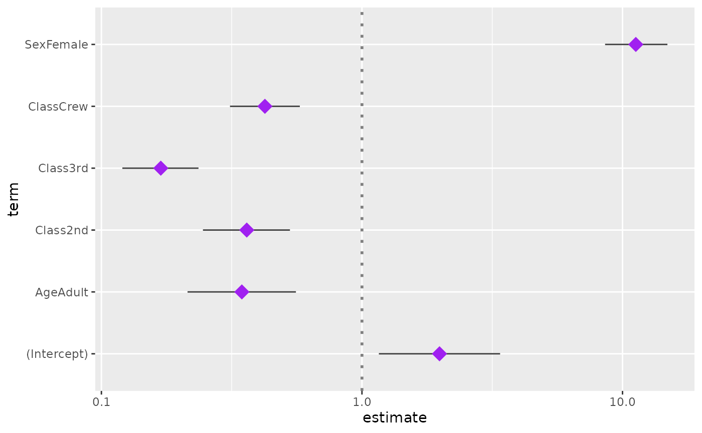

library(GGally)
#> Loading required package: ggplot2
#> Registered S3 method overwritten by 'GGally':
#> method from
#> +.gg ggplot2
GGally::ggcoef()
The purpose of this function is to quickly plot the coefficients of a
model. For an updated and improved version, see
GGally::ggcoef_model() and the corresponding
vignette.
Quick coefficients plot
To work automatically, this function requires the broom
package. Simply call ggcoef() with a model object. It could
be the result of stats::lm, stats::glm or any
other model covered by broom and its
broom::tidy method1.
In the case of a logistic regression (or any other model for which
coefficients are usually exponentiated), simply indicated
exponentiate = TRUE. Note that a logarithmic scale will be
used for the x-axis.
d <- as.data.frame(Titanic)
log.reg <- glm(Survived ~ Sex + Age + Class, family = binomial, data = d, weights = d$Freq)
ggcoef(log.reg, exponentiate = TRUE)
Customizing the plot
You can use conf.int, vline and
exclude_intercept to display or not confidence intervals as
error bars, a vertical line for x = 0 (or
x = 1 if coefficients are exponentiated) and the
intercept.
ggcoef(reg, vline = FALSE, conf.int = FALSE, exclude_intercept = TRUE)
See the help page of ggcoef() for the full list of
arguments that could be used to personalize how error bars and the
vertical line are plotted.
ggcoef(
log.reg,
exponentiate = TRUE,
vline_color = "red",
vline_linetype = "solid",
errorbar_color = "blue",
errorbar_height = .25
)
Additional parameters will be passed to [ggplot2::geom_point()].
ggcoef(log.reg, exponentiate = TRUE, color = "purple", size = 5, shape = 18)
Finally, you can also customize the aesthetic mapping of the points.
library(ggplot2)
ggcoef(log.reg, exponentiate = TRUE, mapping = aes(x = estimate, y = term, size = p.value)) +
scale_size_continuous(trans = "reverse")
Custom data frame
You can also pass a custom data frame to [ggcoef()]. The following variables are expected:
-
term(except if you customize the mapping) -
estimate(except if you customize the mapping) -
conf.lowandconf.high(only if you want to display error bars)
cust <- data.frame(
term = c("male vs. female", "30-49 vs. 18-29", "50+ vs. 18-29", "urban vs. rural"),
estimate = c(.456, 1.234, 1.897, 1.003),
conf.low = c(.411, 1.042, 1.765, 0.678),
conf.high = c(.498, 1.564, 2.034, 1.476),
variable = c("sex", "age", "age", "residence")
)
cust$term <- factor(cust$term, cust$term)
ggcoef(cust, exponentiate = TRUE)
ggcoef(
cust,
exponentiate = TRUE,
mapping = aes(x = estimate, y = term, colour = variable),
size = 5
)